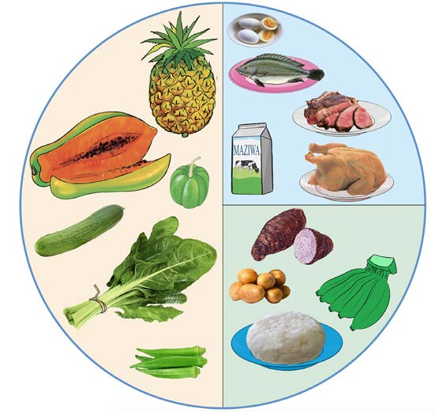

kuupa mwili nguvu. Hii itawasaidia kupata nguvu za kufanyia shughuli mbalimbali na kuwaepusha kupata uzito mkubwa wa mwili. Aidha, wazee wanatakiwa kula vyakula vya kujenga mwili. Vyakula hivi huwasaidia wazee kurejesha chembechembe hai na tishu zilizokufa. Kielelezo namba 8 kinaonesha mlo kamili wa mzee.

Kielelezo namba 8: Mlo kamili wa mzee
Watu wanaofanya kazi zinazotumia nguvu nyingi
Watu wanaofanya kazi zinazotumia nguvu nyingi ni kama vile wabeba mizigo au makuli, waendesha mikokoteni, mafundi magari na wajenzi. Kundi hili, hutakiwa kula kiasi kikubwa cha vyakula vya kuupa mwili nguvu. Vyakula hivi huupa mwili nguvu za kutosha kufanya kazi nzito. Pia, wanapaswa kunywa maji ya kutosha ili kusaidia umeng’enywaji wa haraka wa chakula. Hii itasaidia kuupatia mwili nguvu na kurejesha maji mwilini yanayopotea kwa njia ya jasho wanapofanya kazi. Kielelezo namba 9 kinaonesha mlo kamili wa mtu anayefanya kazi za kutumia nguvu nyingi.